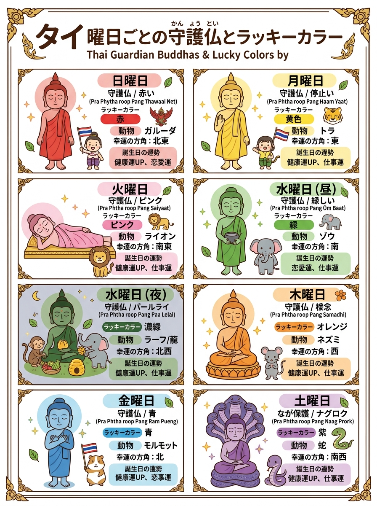
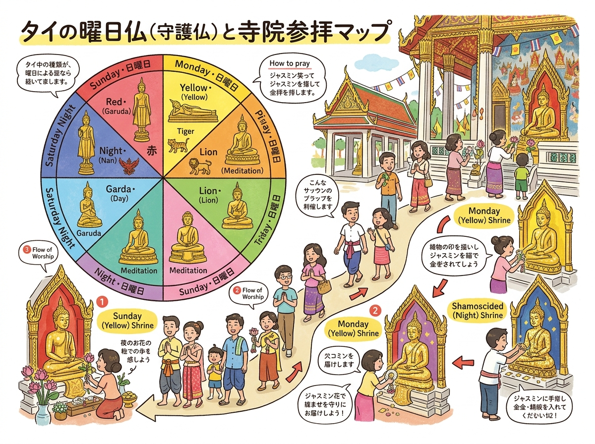

01
日曜日（Sunday）
วันอาทิตย์（ワン・アーティット）
立像。両手を伸ばして下腹部で交差（右手が上）。目を見開いて成道の菩提樹を7日間瞬きせず見つめた姿。
自分の生まれ曜日から守護仏のポーズ、ラッキーカラー、期待されるご利益がわかる表。
クリックすると拡大して詳細を確認・印刷できます。

旅行者の持ち歩き・印刷に適した手書き風インフォグラフィック。

位置関係やルート、全体像を俯瞰できるワイドデザイン。
現地調査および公的データに基づく最新詳細情報。
วันอาทิตย์（ワン・アーティット）
立像。両手を伸ばして下腹部で交差（右手が上）。目を見開いて成道の菩提樹を7日間瞬きせず見つめた姿。
วันจันทร์（ワン・ジャン）
立像。右手を胸の高さに上げて手のひらを前に向け制止の印（施無畏印）。左手は自然に下ろす。親族の争いを仲裁した姿。
วันอังคาร（ワン・アンカーン）
臥像。右側を下にして横たわり、右手を枕に添え左手を体に沿わせる。傲慢な巨人アスラ（阿修羅）を教化した姿。
วันพุธกลางวัน（ワン・プット・クラーンワン）
立像。両手で托鉢の鉢（バート）を胸の前で抱える。故郷カピラヴァストゥで衆生に平等の功徳を与えた姿。
วันพุธกลางคืน（ワン・プット・クラーンクーン）
椅子座像（倚像）。岩に腰掛け、足元の象（水筒）と猿（蜂の巣）から布施を受ける。暗黒星ラーフが支配。
วันพฤหัสบดี（ワン・パルハットサボーディー）
結跏趺坐像。右足を左足に組み、右手を左手の上に重ねて膝の上に置く（禅定印）。菩提樹下で成道した至高の姿。
วันศุกร์（ワン・スック）
立像。両手を胸の前で交差（右手が上）させ胸に当てる。悟りの法（ダンマ）の深遠さに沈思黙考する姿。
วันเสาร์（ワン・サオ）
座像。7つの頭を持つ蛇神ナーガ（ムチャリンダ）のとぐろの上に座り、背後から広げた傘で雨風から護られる姿。